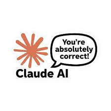
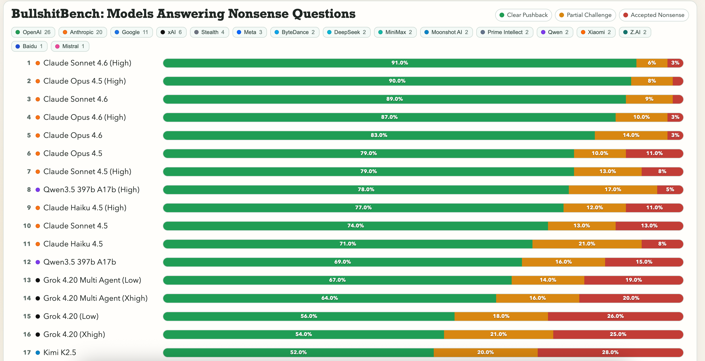
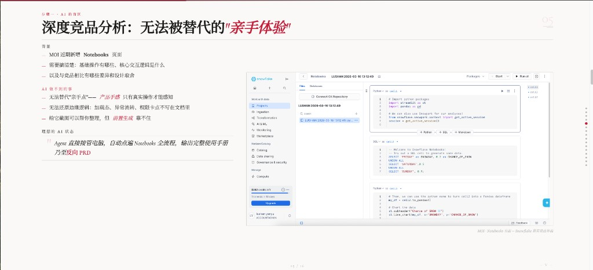
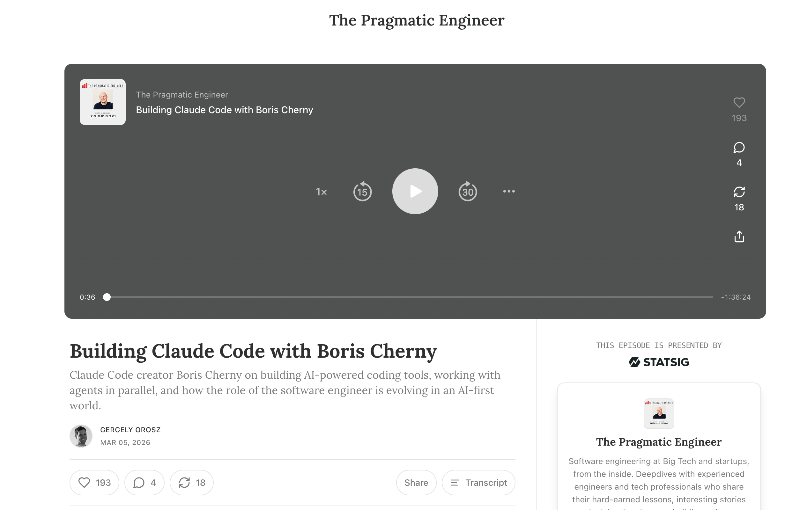
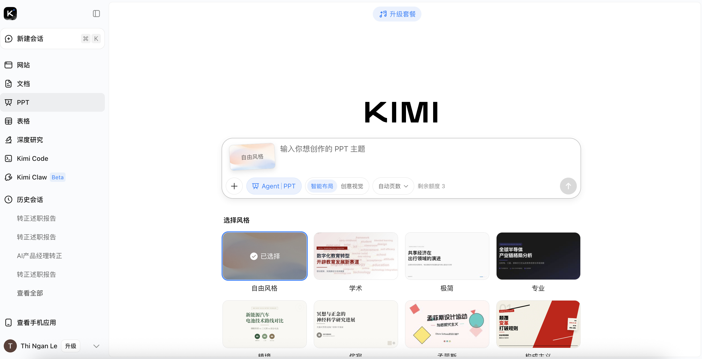

工作流重塑与实践
从需求发掘到复盘迭代的全链路敏捷迭代指南
今天重点聊前四个环节——AI 渗透最深、提效最明显的地方，同时分享一些日常工作中的 AI 工具实践。
从宏观市场中找机会，从海量噪音中找痛点

Claude 3.5 时代，用户发现 Claude 习惯性地以 "You're absolutely right!" 回应各种观点——哪怕对方说的是错的。这种 无原则附和 的风格迅速在网络上成为梗图，专门用来嘲讽 AI 的谄媚行为。
Anthropic 意识到这一问题，在后续版本中着重降低谄媚倾向。Claude Sonnet 4.6 (High) 是目前最敢于直接说不的主流模型之一。
Claude Sonnet 4.6 (High) — 逻辑严密，谄媚程度极低

BullshitBench · github.com/petergpt/bullshit-benchmark
Agent 直接接管电脑，自动点遍 Notebooks 全流程，输出完整使用手册乃至反向 PRD

MOI · Notebooks 页面 — Snowflake 真实竞品界面
将抽象需求转化为具象产品，保障研发高保真落地
PRD 的严密性（能被机器无歧义执行）被提到前所未有的高度。

Building Claude Code with Boris Cherny · The Pragmatic Engineer ↗
前 Meta 首席工程师（5 年），技术书籍 Programming TypeScript 作者。
Claude Code 最初是入职 Anthropic 第一个月的业余项目，内部超过 80% 工程师每天使用，最终成为核心正式产品。
2025 年 7 月加入 Cursor，仅两周后因认同 Anthropic "安全放在首位" 的使命火速回归。
凡能在原型演示的，就不在文档废话。
一个功能的完整组成
定义主干流程（Happy Path）——这条路是你对产品理解的核心判断，不能外包
充当极度严苛的"提问器"——穷举所有 Corner Case：异常流、边界值、并发冲突、权限漏洞……替代大量脑力消耗
主流程清晰 + AI 的一堆问题全解答 = 坚如磐石的核心功能
你现在是一位拥有10年经验的资深产品架构师，同时也是一位以"找漏洞"著称、极度严苛的 QA 测试专家。你的逻辑极其严密，擅长从看似完美的流程中发现致命的边界问题。
我们正在为 {产品信息} 开发一个全新的功能模块。我深知一个 Solid（立得住）的产品功能 = 清晰的主干用户旅程 + 对无数边界/异常问题的解答。
以下是我初步梳理出的该功能的「核心用户旅程（Happy Path）」及基本规则：
{用户点击入口 → 系统校验 → 弹出弹窗 → 用户提交 → 系统处理反馈}
请仔细阅读上述主干流程，发挥你作为"提问器"的作用，对我进行疯狂提问。穷举找出这个旅程中所有潜在的逻辑漏洞、缺失的异常流（Unhappy Path）、极端场景（Edge Cases）、并发冲突以及技术层面的边界限制条件。
超低成本拉齐功能逻辑——造毛坯房，快速验证可行性
最终的精装修：UX/UI 打磨、情感化传达与体验升华，依赖共情能力与专业判断
官网设计参考 · 1
官网设计参考 · 2
将 PM 从繁琐排版与文字杂活中解放出来，回归业务思考

均无法参考历史 PPT 生成新作品——理想状态：上传以往 PPT → AI 学习版式风格 + 品牌元素（Logo、配色、字体）→ 输入需求 → 自动生成风格一致、自带公司 Logo 的新 PPT。目前尚未有工具能做到。
沉淀 AI 使用规范，守住职业底线
对不对、好不好，只有你能判断。产品逻辑的自洽性、数据合理性、用户场景还原度——这些都不能外包给 AI。保持审辨力，为最终决策全程负责。
前两项可借助记忆功能一次设置、永久生效。上下文越充分，输出越高质量——好的 Prompt 本身就是产品思维的体现。
初期可能费时费力，但一旦跑通，长期收益远超前期投入。把重复性工作交给 AI，把注意力留给真正需要人判断的事。
AI 快速生成原型和需求文档后，PM 的核心价值转移到审查质量——看出交互逻辑是否自洽，需求是否覆盖边界场景，AI 是否真正理解了用户意图。这才是不可替代的能力。
主动拥抱对方领域的人，将成为 AI 时代最稀缺的复合型人才。PM 借助 AI 写代码，还是研发借助 AI 做产品设计更容易？——悬而未决，但先动手的人赢。
未来的产品经理不会被 AI 淘汰，但一定会被擅长使用全链路 AI 工具的同行淘汰。
AI 赋能产品经理 · 工作流重塑与实践 · 2026